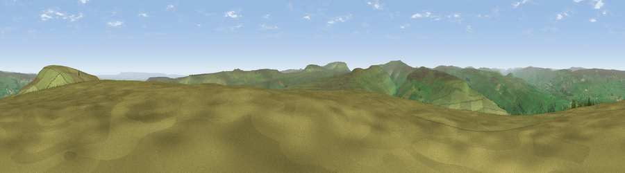

Harland Hill
#7392 in England · top 9% of its area beats it · near West BurtonThe view, rendered

A 360° render of this exact spot computed from the terrain model, tree cover and land cover — summer colours, afternoon light, calibrated against photographs of famous viewpoints. Real trees, hedges and buildings will differ in detail.
The panorama
Grey silhouette: terrain skyline in each direction (720 bearings, Earth curvature and refraction included). Dashed green: skyline with trees (+15 m) and buildings (+8 m) as obstacles. Blue strip: how far the ground is visible on each bearing.
Where the view opens
Wedge length = distance to the farthest visible ground on that bearing (vegetation-aware). Rings at 10, 25 and 50 km.
What fills the view
96% grassland · 3% woodland · 1% cropland
Angular shares of the visible panorama (visual magnitude), not map area. Landscape diversity 0.09 (0–1 Shannon).
Key numbers
More beautiful places nearby
The staircase of upgrades: each row has a higher view potential than everything closer. Driving times are estimates from straight-line distance, calibrated against real road routing — check an actual route before setting out.
| Place | Direction | Drive | Score |
|---|---|---|---|
| Height of Hazely | NNE · 2 km | ~5 min | 68.2 |
| Viewpoint near West Burton | NNE · 3 km | ~6 min | 73.2 |
| Viewpoint near West Witton | NE · 3 km | ~8 min | 75.5 |
| Viewpoint near Kettlewell | SSW · 9 km | ~17 min | 76.6 |
| Viewpoint near Buckden | SW · 9 km | ~17 min | 77.3 |
| Viewpoint near East Witton | E · 11 km | ~21 min | 77.8 |
| Whernside | W · 29 km | ~46 min | 79.9 |
| Viewpoint near Kirby Knowle | E · 43 km | ~63 min | 80.5 |
54.25459, -1.95891 · source: osm peak · position refined by local search. Computed location — check access rights before visiting.